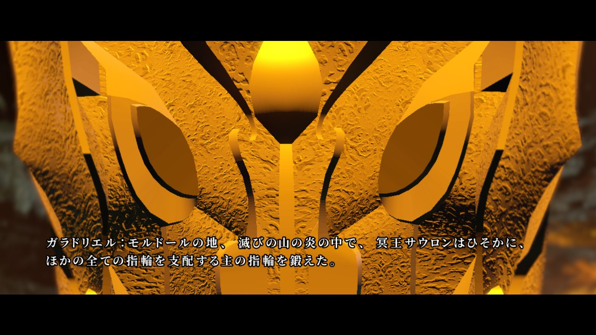
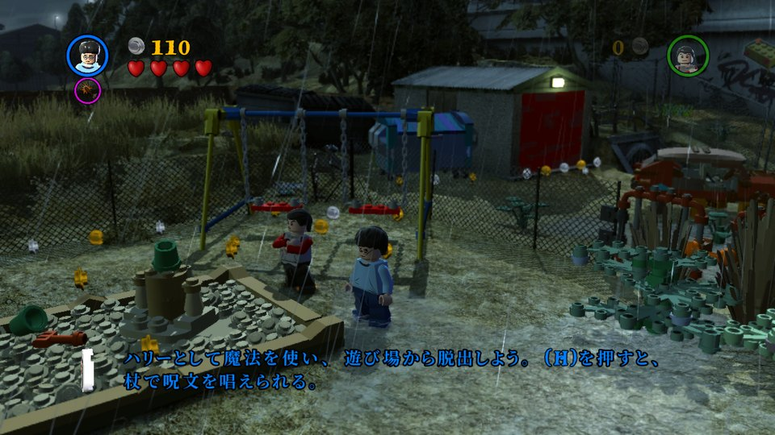
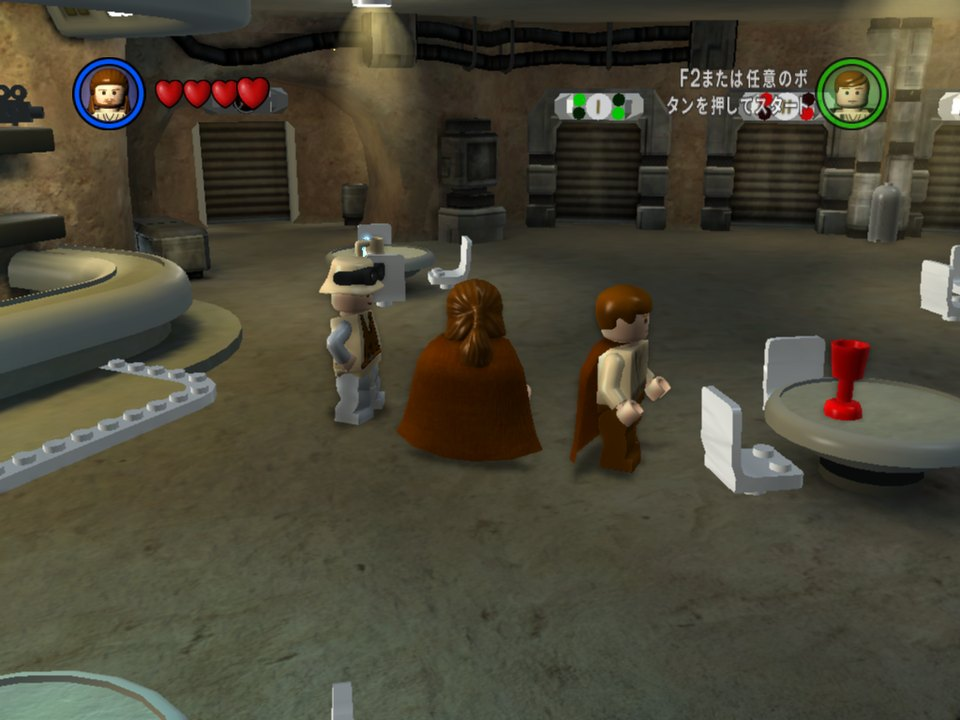
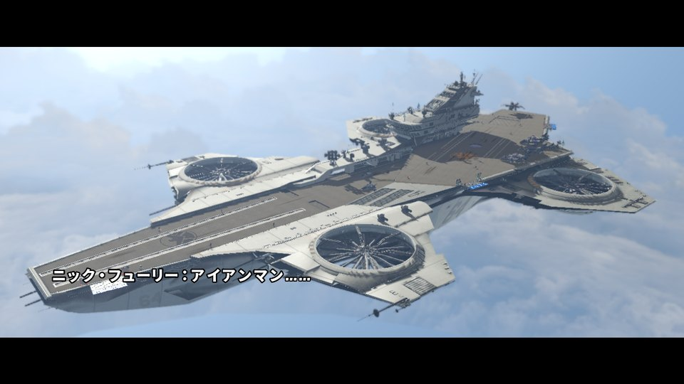
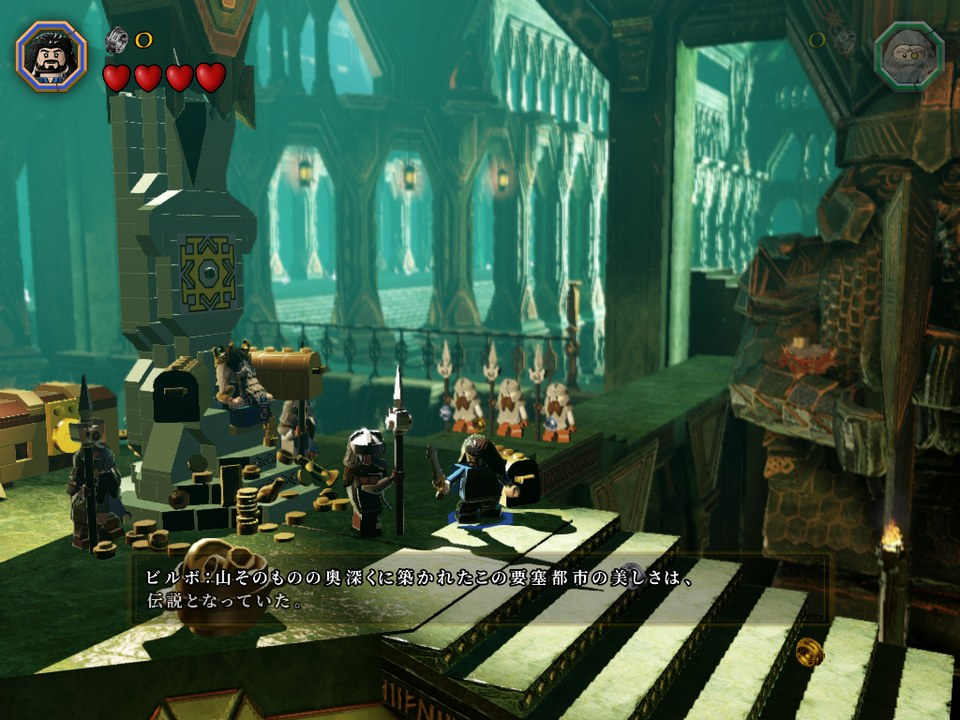
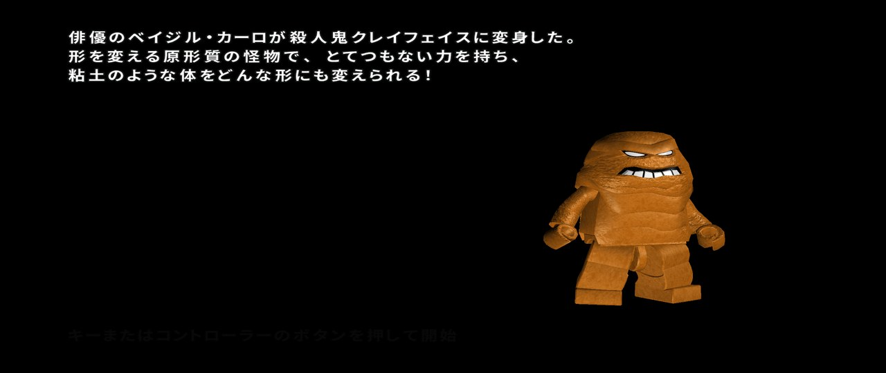
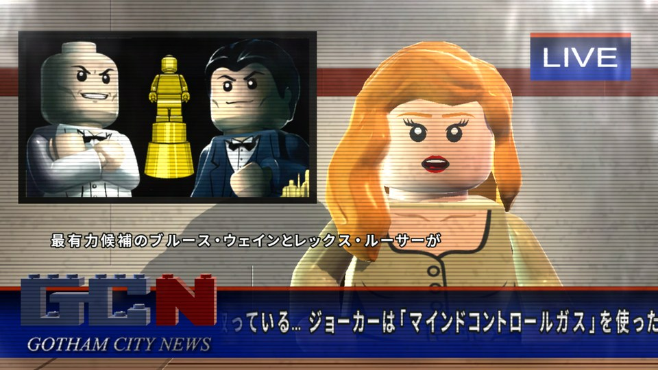
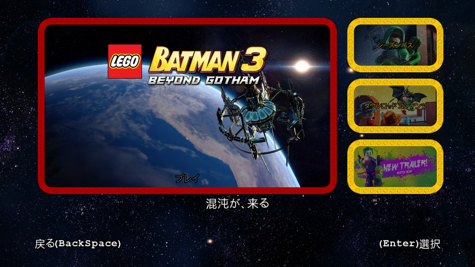

LEGO シリーズ 日本語化プロジェクト
LEGO のゲームを日本語で遊べるようにする、非公式のファンメイド日本語化プロジェクトです。 Steam で販売されている PC 版を対象にしています。 どのパッチも、ゲームのファイルを書き換えずに日本語で遊べるようにし、外せば英語に戻ります。
作品一覧
-

公開中 LEGO ロード・オブ・ザ・リング LEGO® The Lord of the Rings™（2012年） 映画三部作を LEGO で描くアクションアドベンチャー。フロドと旅の仲間の冒険を、ホビット庄から滅びの山まで。 紹介とダウンロード -
 公開中 LEGO ハリー・ポッター 第1章-4章 LEGO® Harry Potter: Years 1-4（2010年） 映画1作目から4作目までを LEGO で描くアクションアドベンチャー。ホグワーツの4年間を呪文と仲間の力で進む。 紹介とダウンロード
公開中 LEGO ハリー・ポッター 第1章-4章 LEGO® Harry Potter: Years 1-4（2010年） 映画1作目から4作目までを LEGO で描くアクションアドベンチャー。ホグワーツの4年間を呪文と仲間の力で進む。 紹介とダウンロード -

公開中 LEGO ハリー・ポッター 第5章-7章 LEGO® Harry Potter: Years 5-7（2011年） 映画5作目から最終章までを LEGO で描くアクションアドベンチャー。ヴォルデモートとの最後の戦いへ。 紹介とダウンロード -

公開中 LEGO スター・ウォーズ コンプリート サーガ LEGO® Star Wars™: The Complete Saga（2007年） 映画エピソード1から6までを LEGO で描くアクションアドベンチャー。全36ステージの冒険。 紹介とダウンロード -

公開中 LEGO マーベル スーパー・ヒーローズ LEGO® MARVEL Super Heroes（2013年） マーベルのヒーローたちが LEGO で活躍するアクションアドベンチャー。フルボイスのかけ合いを字幕で。 紹介とダウンロード -

-

公開中 LEGO バットマン ザ・ビデオゲーム LEGO® Batman™: The Videogame（2008年） バットマンとロビンが LEGO で活躍するアクションアドベンチャー。アーカムから逃げ出した悪役たちを追う。 紹介とダウンロード -

公開中 LEGO バットマン2 DC スーパーヒーローズ LEGO® Batman™ 2: DC Super Heroes（2012年） バットマンがジャスティス・リーグの仲間とゴッサム・シティを守るアクションアドベンチャー。フルボイスを字幕で。 紹介とダウンロード -

公開中 LEGO バットマン3 ザ・ゲーム ゴッサムから宇宙へ LEGO® Batman™ 3: Beyond Gotham（2014年） DC のヒーローと悪役が手を組み、ブレイニアックを止めに宇宙へ向かうアクションアドベンチャー。 紹介とダウンロード